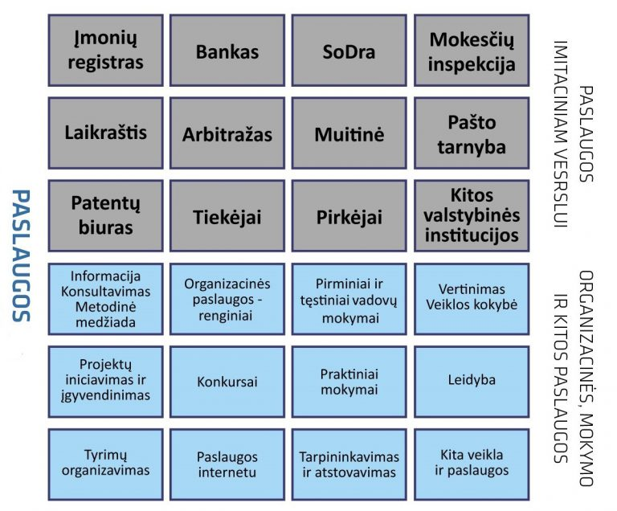

Simulith centras
Centro vizija – švietimo aplinka, užtikrinanti mokymosi visą gyvenimą, praktinio mokymosi bei verslumo įgūdžių plėtrą. Siekiame suteikti galimybę studentams, mokiniams ir suaugusiems įgyti praktinius verslumo, socialinius, techninius ir
profesinius įgūdžius
Pagrindinės funkcijos. Pagal su mokymo institucijomis ir kitomis organizacijomis sudarytas sutartis, teikti paslaugas šiose institucijose įsikūrusioms imitacinėms bendrovėms:
- organizuoti imitacines bendroves aptarnaujančių imitacinių Centro padalinių (Bankas, Registras, Mokesčiai, „SoDra“, Paštas, Prekyba, Muitinė ir kiti) veiklas;
- organizuoti imitacinių bendrovių vadovų, jose dirbančių pedagogų kvalifikacijos kėlimo renginius;
- inicijuoti imitacinių bendrovių plėtros projektus;
- aktyvinti Lietuvos ir tarptautinio imitacinių bendrovių tinklo bendradarbiavimą skatinančias veiklas organizuojant įvairius renginius imitacinių bendrovių praktikantams, pedagogams, partneriams (muges, seminarus, stažuotes, konkursus,
leidybą ir kitas veiklas).
- kaupti, analizuoti, vertinti ir skleisti informaciją apie Lietuvos ir užsienio imitacinių bendrovių patirtį ir pasiekimus;
- bendradarbiauti su socialiniais partneriais, verslo įmonėmis bei asociacijomis.``
Mes esame
Lietuvos imitacinių bendrovių tinklo centrinis biuras, prižiūrintis, koordinuojantis ir tobulinantis jų veiklą Lietuvoje.
